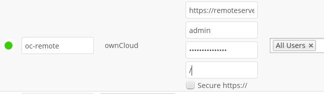

WebDAV¶
Use this backend to mount a directory from any WebDAV server, or another Nextcloud server.
You need the following information:
- Folder name: The name of your local mountpoint.
- The URL of the WebDAV or Nextcloud server.
- Username and password for the remote server
- Secure https://: We always recommend https:// for security, though you can leave this unchecked for http://.
Optionally, a Remote Subfolder can be specified to change the destination
directory. The default is to use the whole root.

Note
CPanel users should install Web Disk to enable WebDAV functionality.
See Configuring External Storage (GUI) for additional mount options and information.
See External Storage authentication mechanisms for more information on authentication schemes.